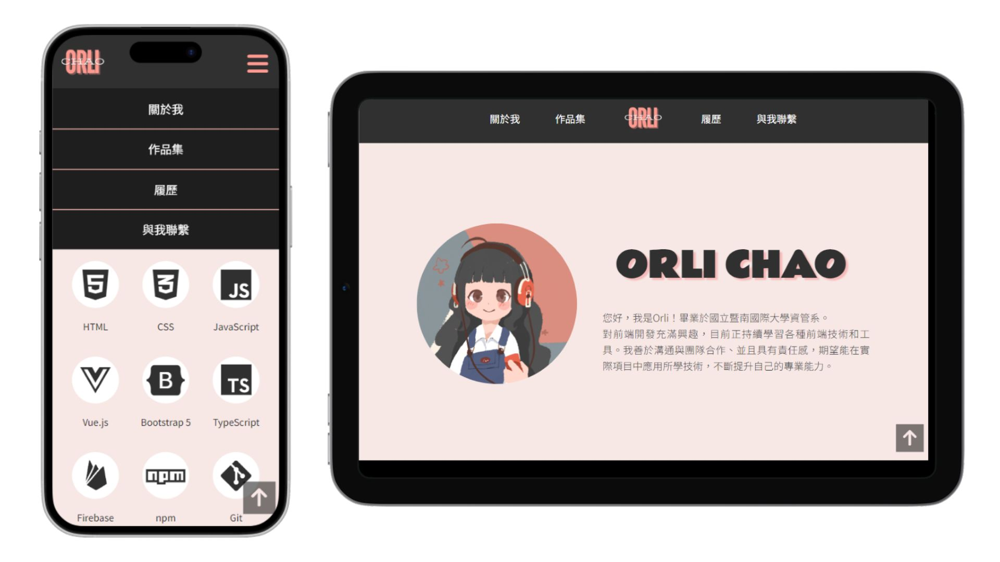
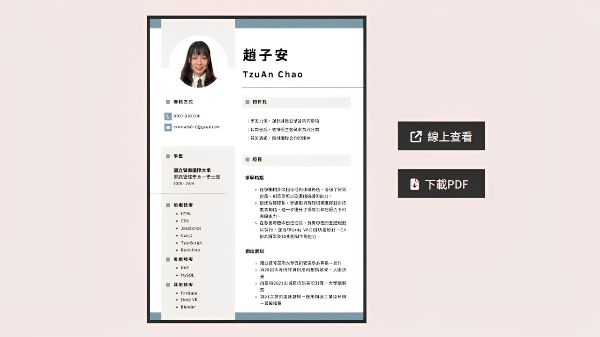
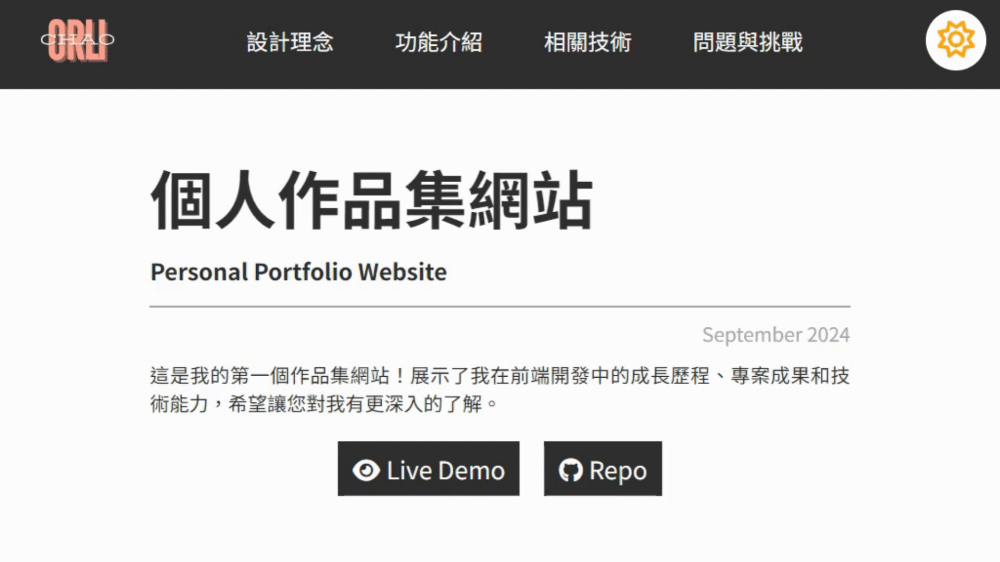

網站設計採用極簡風格，以淺粉色和黑色為主色調，營造出專業且簡潔的視覺效果。整體架構基於 RWD 響應式設計，確保在桌面與移動設備上都能提供順暢的操作體驗。頁面設計注重直觀的導航和清晰的內容層次，讓訪客可以輕鬆找到所需的資訊。為更清楚地展示專案作品，專門設計了作品介紹頁，提供詳細的圖文說明，讓訪客更全面地了解我的作品內容。
設計理念

特色介紹
卡片式專案展示
專案列表設計為卡片樣式，並在卡片上標示專案使用的技術，方便訪客迅速了解每個專案的技術背景。卡片設計不僅提升了視覺層次，也優化了互動體驗，訪客可以點擊卡片以進一步了解專案詳情，帶來簡潔流暢的使用體驗

線上查看與下載履歷
履歷區塊提供線上查看和下載選項，方便訪客隨時查閱或保存。訪客可以直接在網站內瀏覽履歷，也能通過雲端連結獲取詳細資訊，或是下載履歷的 PDF 格式，確保資料的完整性和可讀性，提升了整體使用體驗。

明暗模式切換設計
專案介紹頁面支援明暗模式切換，訪客可依據偏好選擇合適的瀏覽模式。暗色模式帶來柔和的視覺效果，不僅適合夜間使用，也為網站增添了現代感。此功能提供個性化的視覺體驗，進一步提升網站的易用性與友好度。

相關技術
履歷雲端分享和下載
為了讓訪客方便地查看和保存履歷，我選擇將履歷的 PDF 檔上傳至 Google 雲端硬碟，並生成公開的共享和下載連結。透過這種方式，訪客可以在線查看完整的履歷內容，並隨時選擇下載保存 PDF 文件，確保分享過程中不會失真或遺失重要資訊。這樣的設計大大提升了履歷的可用性，使訪客能夠更輕鬆地獲取所需資訊。
表單提交：無後端的聯絡表單
為了簡化聯絡表單的設置，我選擇使用
Formspree
來處理訪客的表單提交。這個工具允許表單內容直接發送至我的信箱，無需配置後端伺服器，從而實現安全、快速的資料傳送。
為了進一步提升用戶體驗，我使用
JavaScript (AJAX)
實現了非同步表單提交，這樣訪客在提交表單後，不必重新加載頁面，能夠即時看到提交狀態。Formspree
提供的 API
確保數據的私密性和寄送的準確性，大幅提升了整體設置的效率，使聯絡表單更輕量且更易管理。
若想了解更多，請訪問
Formspree
問題與挑戰
關於響應式設計的規劃
個人作品集網站是我的第一個前端作品，因此在規劃階段並未考慮周全，特別是在 RWD 設計上。最初我專注於完成桌機版本，隨後才逐步調整小型設備的顯示。由於在所有內容完成後又需要回過頭來調整 CSS 樣式，這導致我完成作品的效率降低。透過這次經驗，我學會了在項目初期就做好規劃，以便在設計過程中能更輕鬆地實現各種設備的 RWD 設計。
明暗模式切換的技術挑戰
在研究明暗模式切換功能時，我發現使用原生
CSS
變數是一種簡單而有效的方法。透過為不同主題定義變數，例如文字顏色、背景顏色等，我可以快速切換主題樣式，讓網站的外觀隨著用戶的選擇而改變。雖然我最初對這種技術不太熟悉，但在實踐中，我逐漸掌握了如何運用這些變數來達成效果。
在未來，我計劃學習 CSS 預處理器如 SASS
或
SCSS。這些預處理器提供了更強大的功能，能進一步提升樣式表的可維護性和可讀性，並有效組織和管理大量樣式，特別是在處理大型項目時。透過學習這些工具，能幫助我更有效率地進行前端開發。
表單提交的後端配置問題
原本我計畫使用 PHP 來處理聯絡表單的寄件功能，讓填寫的資料可以透過後端直接寄送至我的電子信箱。然而，考量到 GitHub Pages 僅支援靜態網站部署，我開始尋找替代方案，最終選擇了 Formspree 作為解決方法。這個工具不僅幫助我完成了表單資料的提交，也省去了搭建後端的時間，讓資料能安全傳送到我的信箱。
瀏覽器自動填入的樣式影響
在開發過程中，我發現瀏覽器自動填充的預設樣式會改變我設計的表單外觀，影響整體的用戶體驗。為了解決這個問題，我嘗試了幾種方法，包括使用 :autofill 覆蓋自動填充的預設樣式，或直接關閉表單和輸入欄位的自動填充功能 (autocomplete)。最終，我選擇了關閉自動填充功能，這樣能更有效地保持表單設計風格的一致性。